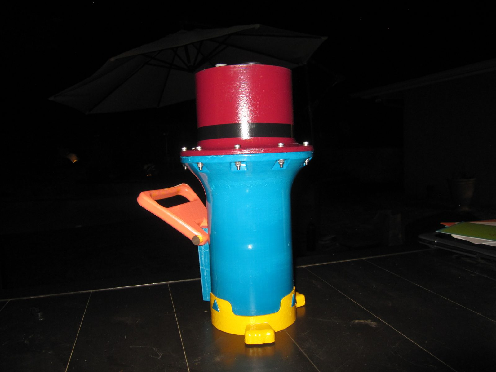
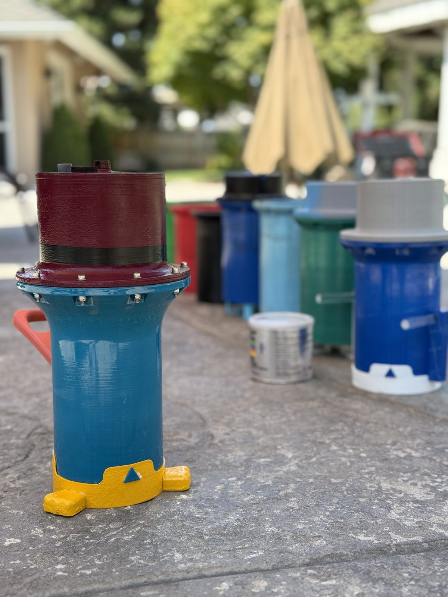

PERRY: Design and Open-Water Verification of a LoRa-Activated Vertical Profiling Float
Abstract. PERRY is a vertical profiling float: on a LoRa activation signal it runs three profiles to a set depth, logging temperature, pressure, and depth, and transmits the record on resurfacing. The hull is acetone-vapor-smoothed ABS closed by static o-rings; field testing showed marine grease admitting water at the seals, and the switch to silicone grease fixed it. A 50 mL buoyancy engine moves the craft, which has a mass of about 10 lb (4.5 kg); depth is held by a PID controller on Bar02 depth with hand-set gains. In open water it profiled to 4 m, resurfaced, and returned its data. The author owned the programming, the electronics, and the buoyancy design on a team build.
1Pressure Sealing
The hull is a sealed pressure vessel, and the sealing strategy is the core mechanical problem of the craft. Static o-ring seals close the hull. The seal design covered o-ring groove sizing, seal-stack layout, and selection of a grease for assembly.
The grease selection was decided by test. The first field tests were run with marine grease, and the hull took on water at the seals. Switching to silicone grease stopped the ingress, and the open-water mission was run on silicone.
The hull is FDM-printed in ABS on a Bambu Lab printer, which leaves a layered, porous surface unsuited to sealing. The printed hull was acetone-vapor smoothed in a chamber, using the solvent pass as a conformal surface treatment to close layer lines. The print was set up for the treatment: extra perimeter walls were added so the smoothing pass could not open the surface into the infill.


2Buoyancy Engine
Depth is driven by a buoyancy engine rather than thrusters. A NEMA17 stepper motor, running through a TMC2209 driver under UART control, changes the craft's displacement by 50 mL to move it between the surface and the target depth. The craft has a mass of about 10 lb (4.5 kg). The 50 mL allowance was set by estimate against that mass and confirmed by trial rather than by a formal buoyancy calculation; that is recorded as a limitation in Section 6.
3Depth Control
Depth is closed-loop. The ESP32 reads depth from the Bar02 and runs a PID controller against the target depth; the controller output commands the buoyancy engine's displacement through the stepper. The gains were set by hand. The schedule did not leave time for a tuning campaign, so the loop was run with guessed gains adjusted by trial until the craft reached and held the 4 m target well enough to complete the mission. Overshoot, settling time, and steady-state error were not recorded. This loop is the only feedback control on the craft; profile sequencing and the transmit step run open-loop on mission logic.
4Electronics and Firmware
An ESP32 runs the mission logic: arming over LoRa, profile sequencing, sensor logging, and data return. Depth and pressure are read from a Blue Robotics Bar02 pressure sensor on the I²C bus. The LoRa link is a REYAX RYLR896 module on a 115200-baud UART. The stepper driver is commanded over a second UART. All electronics were assembled and soldered on protoboard.
| Subsystem | Component | Interface / process |
|---|---|---|
| Controller | ESP32 | mission logic, logging, radio |
| Pressure and depth | Blue Robotics Bar02 | I²C |
| Depth drive | NEMA17 stepper, TMC2209 driver | UART; 50 mL displacement change |
| Depth control | PID on Bar02 depth | gains set by hand, not tuned |
| Radio | REYAX RYLR896 LoRa | UART, 115200 baud |
| Hull | FDM ABS, Bambu Lab printer | chamber vapor smoothed; static o-rings; silicone grease |
| Mass | about 10 lb (4.5 kg) | — |
| Assembly | protoboard, hand soldered | — |
5Open-Water Verification
The craft completed its mission profile in open water: it profiled to 4 m, resurfaced, and delivered its logged data over the radio link. Figure 2 shows the commanded mission profile. The logged dataset itself was not retained (Section 6), so no measured profile is reproduced here.
6Known Limitations
- Seal integrity is verified to 4 m only. Maximum safe operating depth has not been characterized.
- The buoyancy engine's 50 mL allowance was set by estimate and checked by trial, not by a formal buoyancy budget. Displacement was not measured.
- The o-ring groove dimensions and the original design files were not retained.
- The logged dataset from the mission was not retained; the record of the profile is the mission outcome, not the data.
- PID gains were set by hand and adjusted by trial, not tuned by a method. Overshoot, settling time, and steady-state error at the 4 m target were not recorded.
- Effective LoRa range was not measured; the link is verified only at mission distances.
- Sensor sample rate was not formally recorded.
- Single Bar02 sensor with no redundancy; a sensor fault ends the mission.
7Role and Attribution
Team project, Crush Depth float team. The author owned the programming, the electronics, and the physics and buoyancy side of the craft, and previously served as Float Team Technical Lead, taking the subteam through LoRa communications, ESP32 development, stepper motors and drivers, and board assembly.